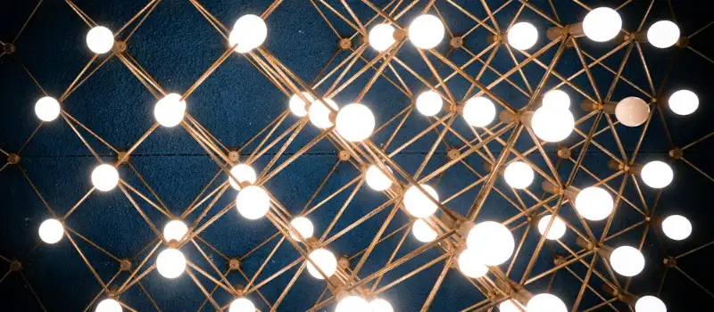

Asiakastyö · LuottamuksellinenMyynnin ja mainonnan automaatio
Asiakasprojekti: järjestelmä, joka automatisoi myynti- ja mainostyötä Playwrightin ja tekoälyagenttien avulla. Se etsii yritykset, jotka tarvitsevat asiakkaan tarjoamaa ratkaisua, yhdistää ne oikeaan tarjoukseen ja kirjoittaa yhteydenottoviestin luonnoksen automaattisesti. Lähdin liikkeelle ilman kokemusta tekoälyagenteista ja sain toimivan demon valmiiksi kuukaudessa. Asiakas ja projekti ovat luottamuksellisia, joten koodia tai linkkiä en voi jakaa.
Yksityinen projekti
 Verkkosivut
Verkkosivut